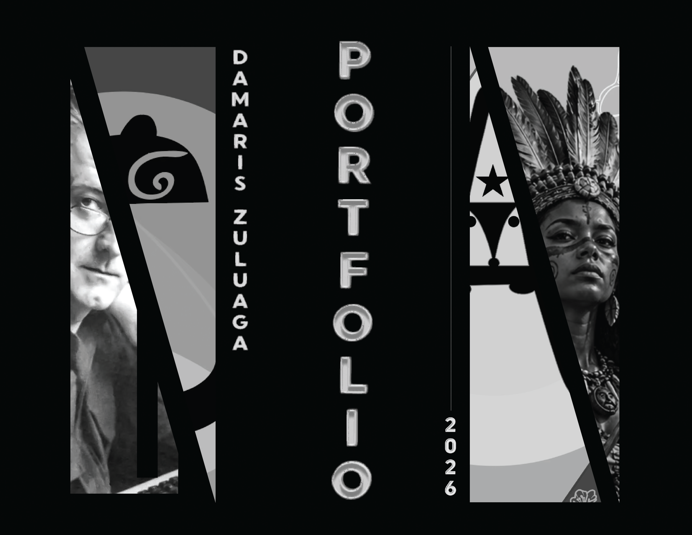
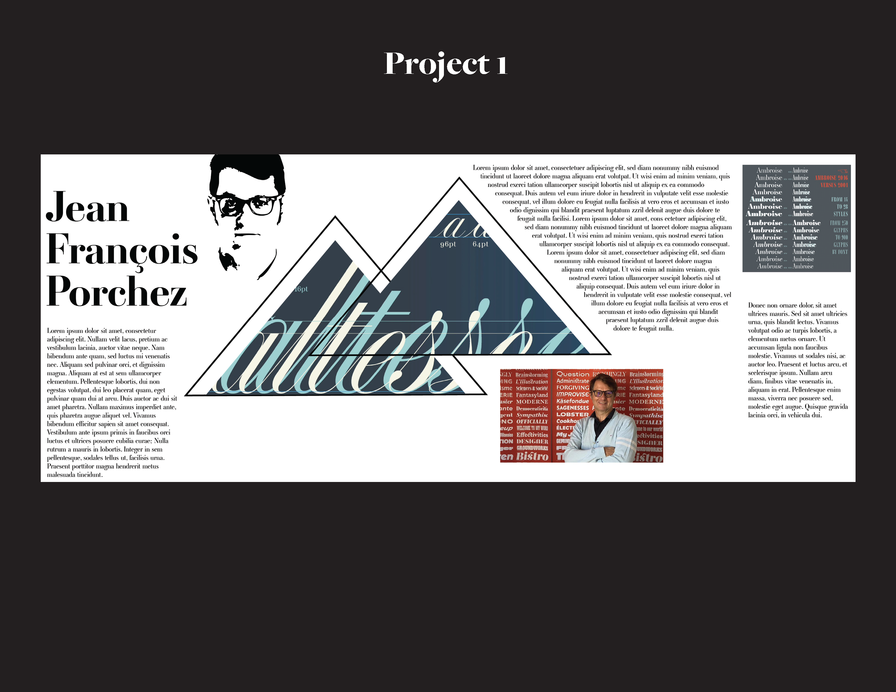
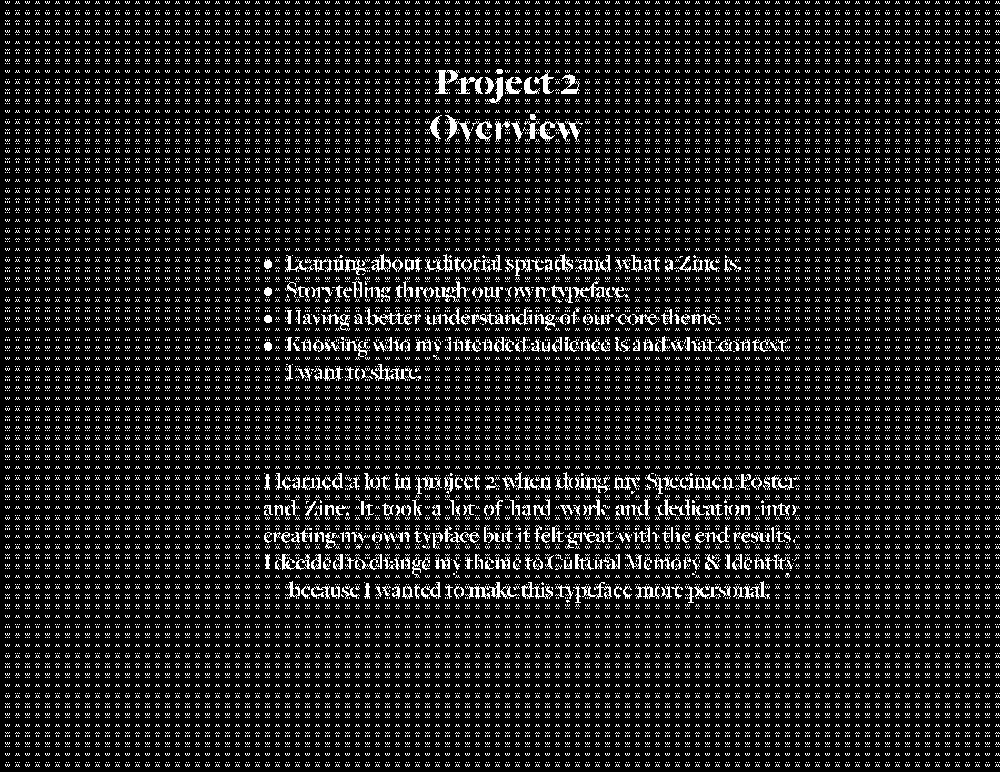
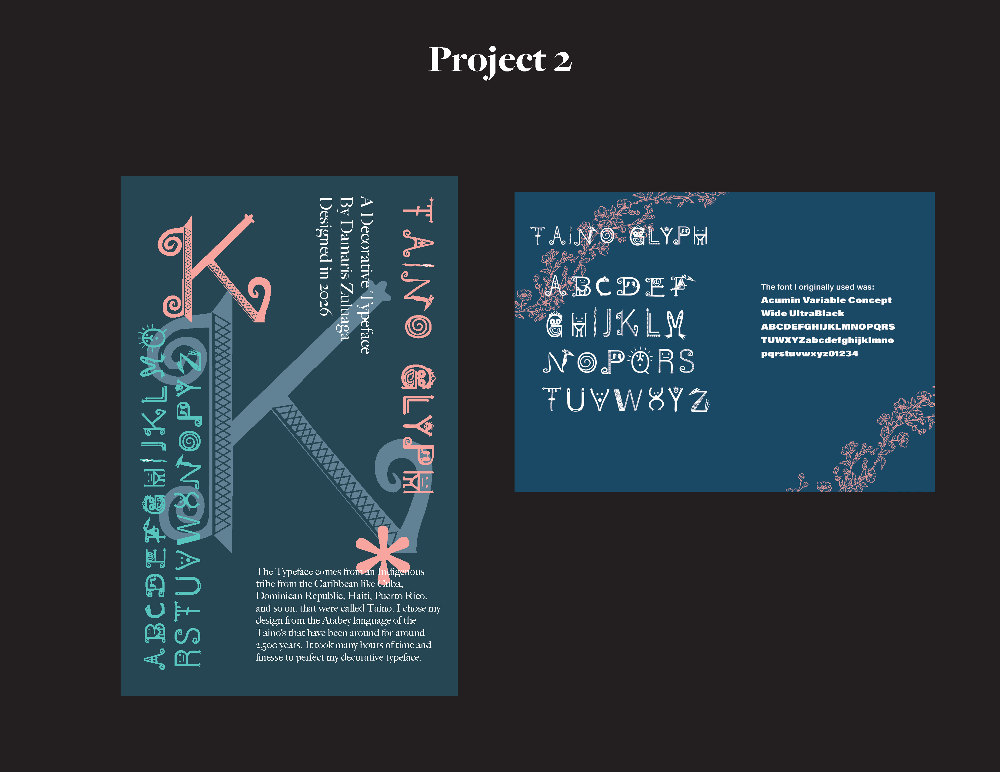
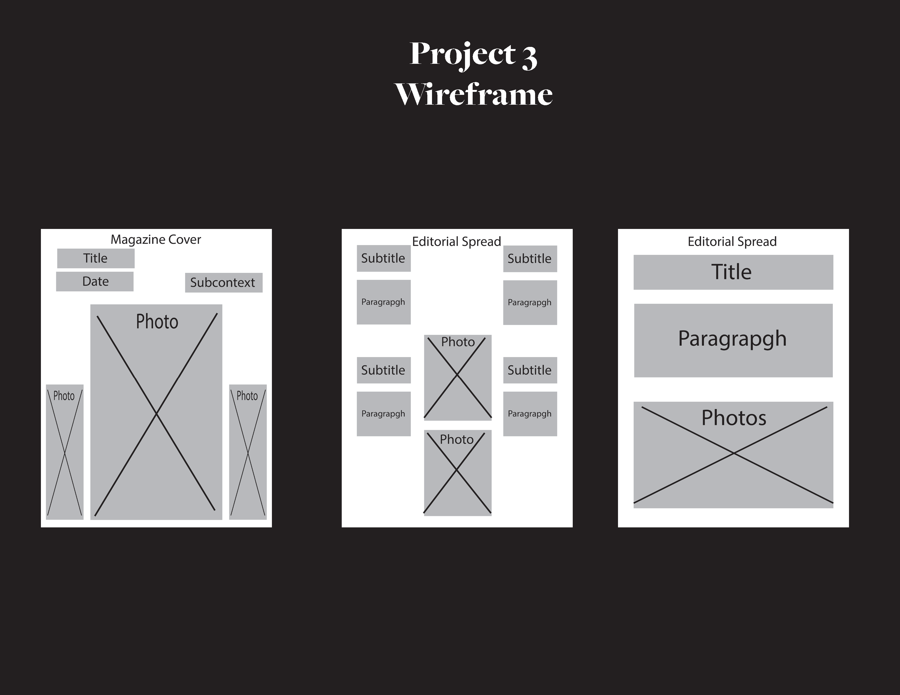
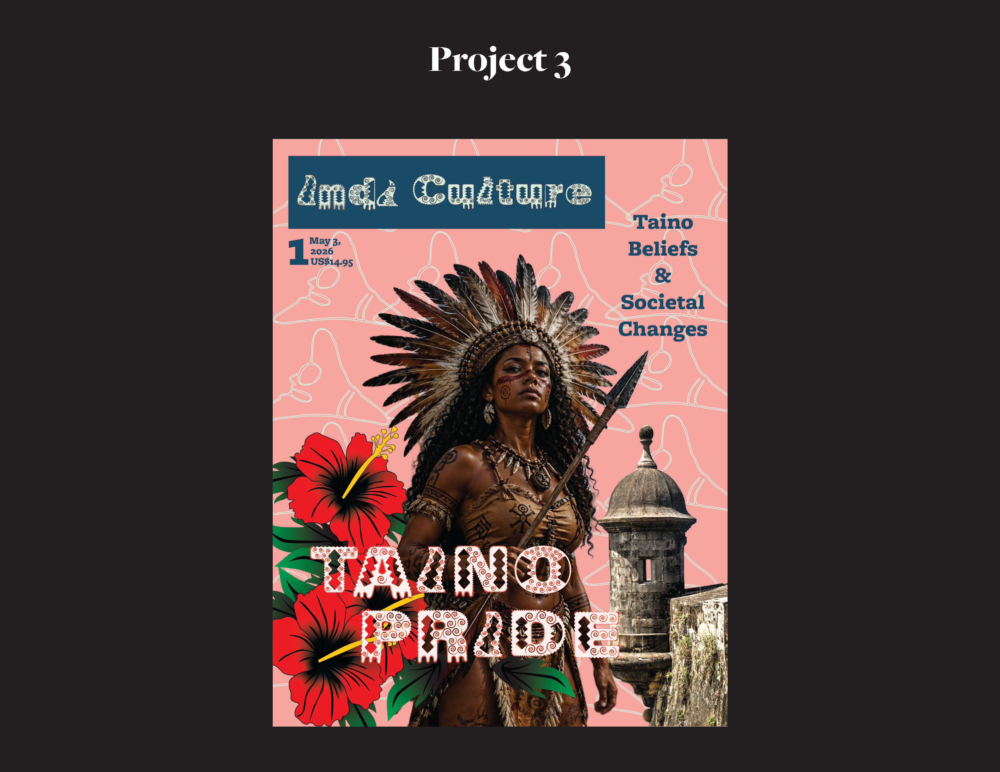
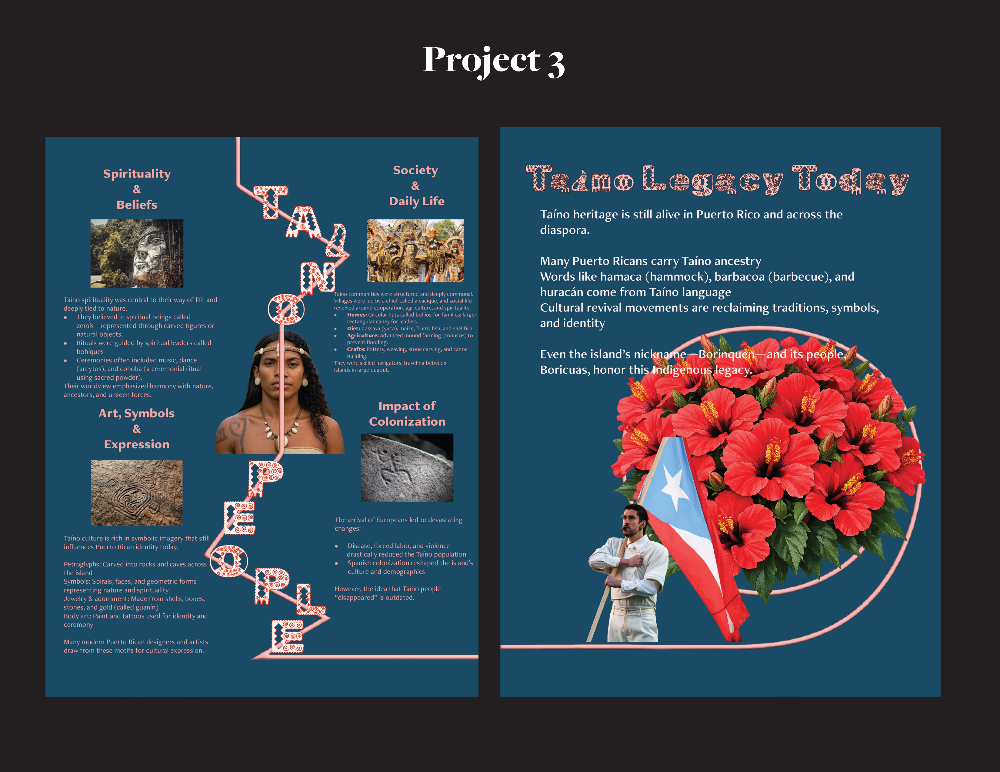
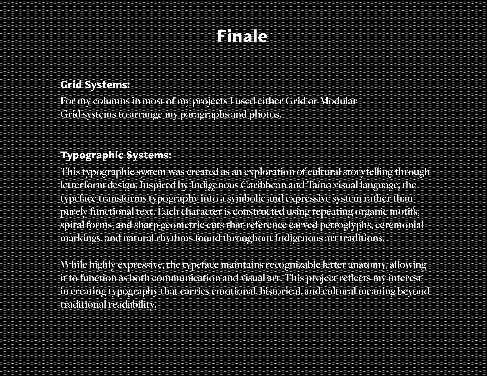

Portfolio
- Project:Typography Portfolio
- Timeline: April 22–June 29, 2026
- Tools: Adobe Illustrator, After Effects, Photoshop, InDesign
Description
In my personal brand, I interwove my initials, “DZ,” to create a sense of connection—each letter supporting the other as a symbol of collaboration, unity, and belonging. A soft yet confident color palette reinforces this idea, expressing authenticity, compassion, and optimism while signaling a forward-looking spirit. At the center of the emblem, subtle motifs inspired by Taíno symbolism add deeper meaning. These glyph-like forms, reminiscent of traditional petroglyphs, reflect themes of renewal, cosmic balance, and an enduring connection to the land. By incorporating these indigenous influences, the design honors ancestral heritage, grounds the brand in community, and embodies a sense of growth and transformation. Together, these elements communicate a message of inclusive strength—celebrating our origins, embracing shared identity, and looking toward a brighter, collective future.
Project 1 Overview
A minimalist project overview page that outlines three goals: learning about type designers, adapting a typeface into an original creation, and researching the origins, structure, and meaning of typography. The project focuses on Jean François Porchez, Matthew Carter, and Tobias Frere-Jones, with the concept “Architecture & Built Environments."
Type Designers
A project board that combines type specimens and portraits of type designers. The samples compare Matthew Carter's Roster, Tobias Frere-Jones's Nobel, and Jean François Porchez's Ambroise typefaces, alongside portraits of the designers. A large “Project 1” heading sits at the top.

Jean François Porchez
A magazine spread exploring Jean François Porchez's Ambroise typeface. Oversized decorative letterforms and a portrait sit alongside sample text, a large geometric illustration, and a panel showing variations of the typeface. The layout uses black, white, slate blue, and pale aqua to showcase Ambroise's ornate details and range.

Project 2 Overview
This lists goals around editorial spreads, zines, storytelling through a custom typeface, and defining the project’s theme and audience. A closing paragraph reflects on creating a specimen poster and zine, and explains the shift toward a more personal theme of cultural memory and identity.

Project 2 Specimen Posters
A “Project 2” presentation shows a custom decorative typeface inspired by Taíno art and Caribbean heritage. On the left, a vertical specimen poster layers oversized letterforms, symbols, and explanatory text in coral, aqua, and slate blue.
Project 3 Overview
This is a typography project focused on uppercase and lowercase forms, grid systems, and invisible frameworks. The goals include creating dynamic, unconventional compositions while using consistent layout and spacing to bring balance. The project also includes a cover page and magazine spread.

Typography Wireframes
Project 3 Wireframe presents a magazine cover with a title, date, subcontext, and photo placeholders, followed by two editorial spread designs combining subtitles, paragraphs, and image areas. The diagrams show how text and photos could be arranged across the pages.

Taíno Magazine Cover
A coral pink magazine cover titled “Indi Culture,” with the feature headline “Taíno Beliefs and Societal Changes.” A central portrait of a woman wearing a feathered headdress is layered with bold decorative lettering, red hibiscus flowers, and an image of a historic stone fort. White line drawings pattern the background, creating a vibrant collage about Taíno culture and identity.

Project 3
Inside Magazine Spread
A two-page editorial spread about Taíno history, culture, and its continuing influence in Puerto Rico. The left page covers spirituality, art and symbols, community life, and the impact of colonization, arranged around a central portrait and a vertical decorative “Taíno” motif. The right page highlights Taíno legacy today with text about ancestry, language, and cultural revival, alongside a collage of hibiscus flowers and the Puerto Rican flag. Navy blue and coral pink unify the spread.

Finale
A “Finale” page summarizes the project's design approach. It explains how grid and modular systems organize paragraphs and photos, then describes a custom typeface inspired by Indigenous Caribbean and Taíno visual traditions. Repeating organic motifs, spirals, and geometric cuts reference petroglyphs and ceremonial markings, shaping typography into both a communication tool and a form of cultural expression.
Specimen Posters
"miller" Matthew Carter

"nobel" Tobias Frere-Jones